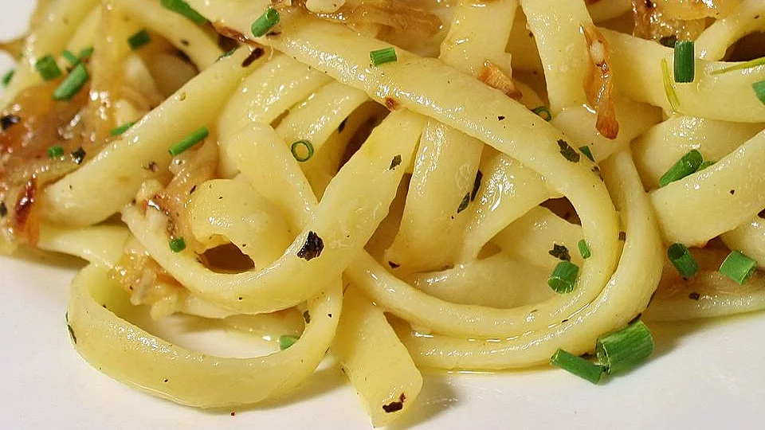

Onion Pasta

Onion Pasta - Delicious and easy to make succulent Onion Pasta, great for
the whole family!
- Prep Time: 5mins
- Cook Time: 15mins
- Noodles Cooking Time: 10mins
- Total Time: 30mins
INGREDIENTS
- ½ cup olive oil
- Water, for boiling noodles
- 4 tablespoons butter
- 5 onions, thinly sliced
- 1 teaspoon dried basil
- 1 pinch ground black pepper
- 1 cup water
- 1 tablespoon chicken bouillon
- 1 pound uncooked pasta, cooked according to package directions
INSTRUCTIONS
-
In a big pot boil enough water to boil. When the water comes to a
roaring boil, add noodles to it and cook till al-dente.
-
Once done, add drain noodles and add 1tsp of oil, mix lightly and nicely
(can use hands) and spread on a flat plate/dish.
-
In a large skillet place oil, butter and onions and cook until golden
brown.
-
Add basil, pepper, water and bouillon and cook on low heat for 10
minutes.
-
Add onion mixture to cooked pasta, sprinkle with cheese, toss and serve.